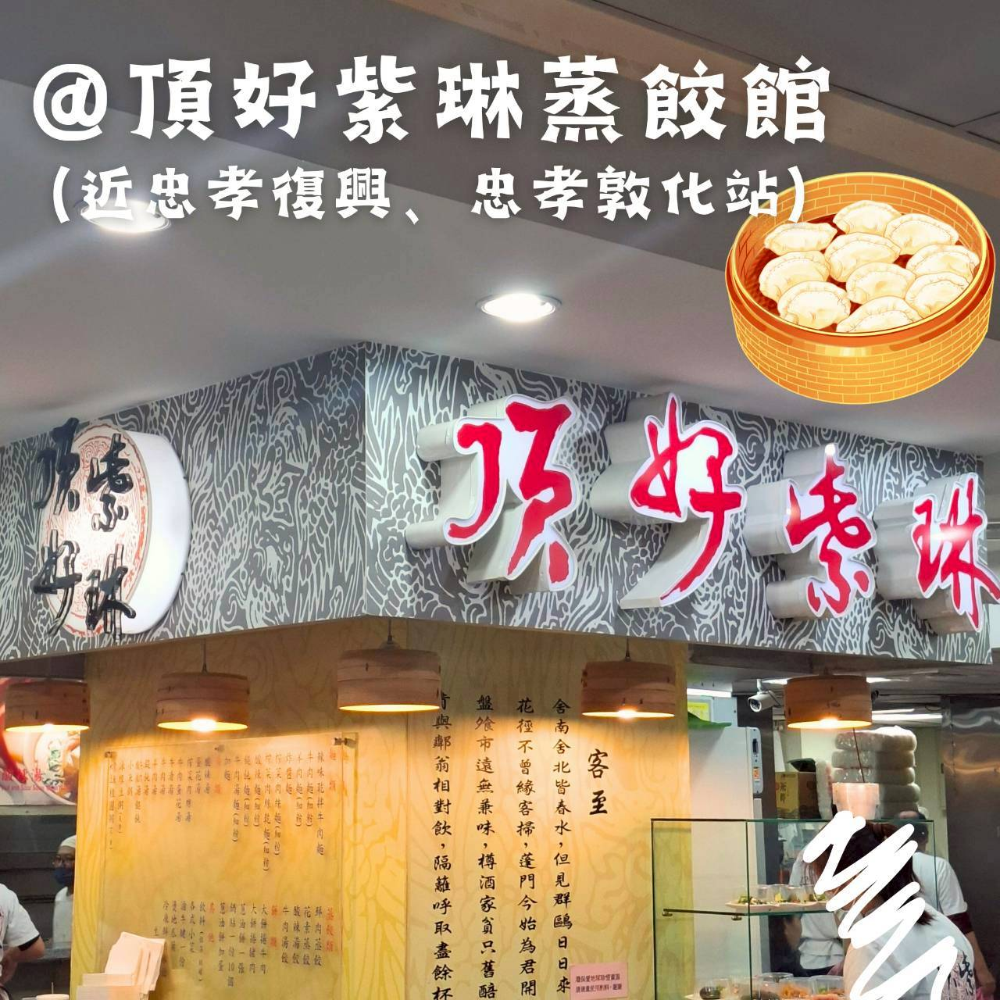
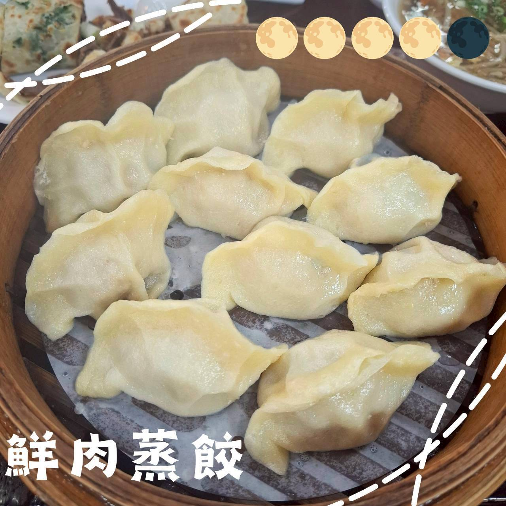
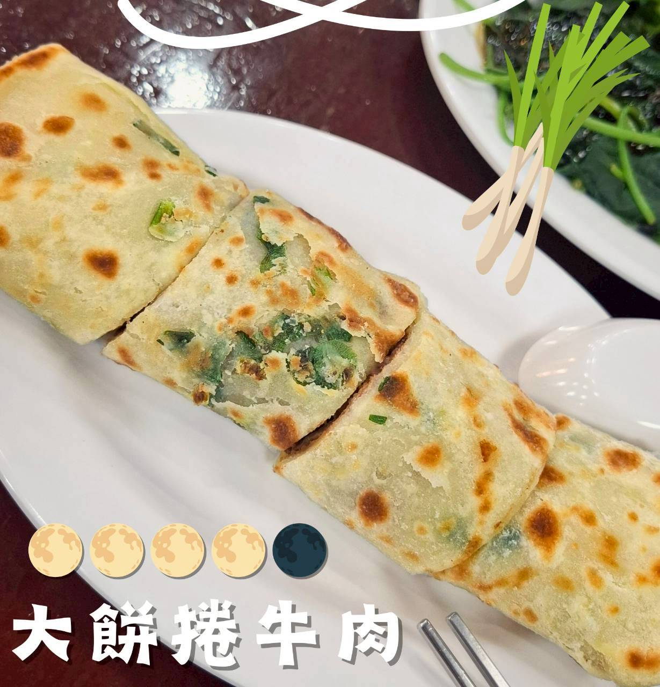
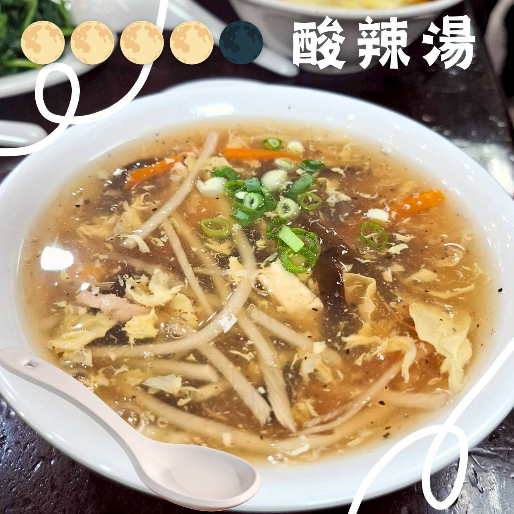
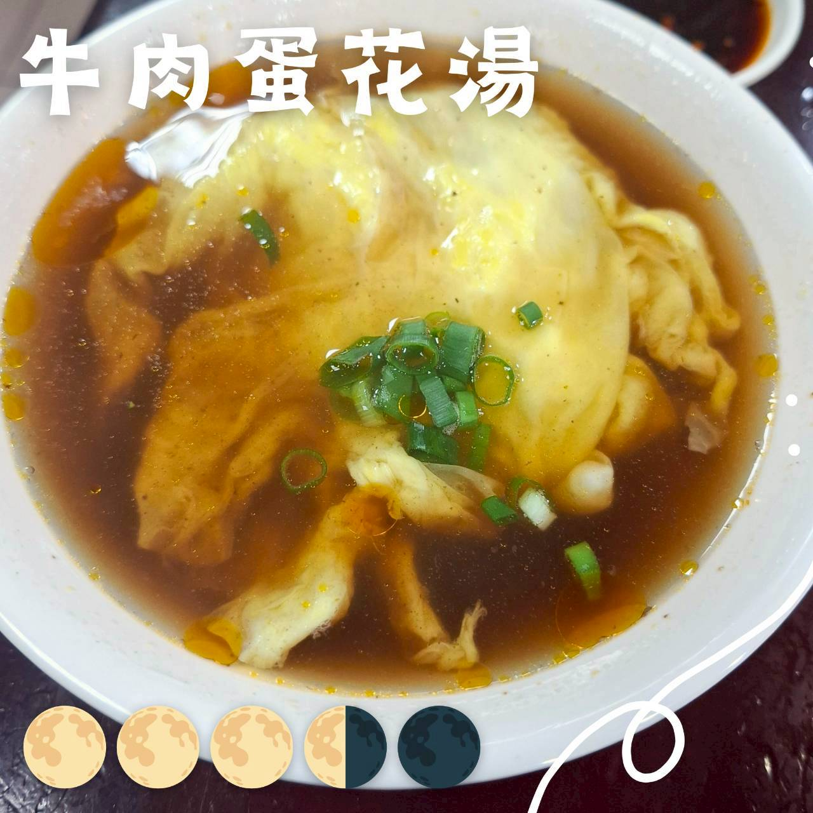
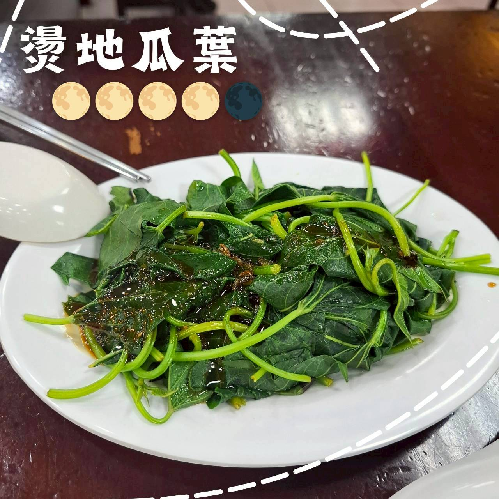

頂好紫琳蒸餃館
1️⃣ 基本資料
- 餐廳名稱：頂好紫琳蒸餃館
- 地點：台北市大安區忠孝東路四段97號B1（頂好名店城地下美食街）
- 價位區間：NT$100–NT$250
- 營業時段：每日 11:00–21:00
- 是否需訂位：高峰時段需排隊候位
2️⃣ 餐廳飲食類型與整體環境
餐廳飲食類型：蒸餃、鍋貼、牛肉麵、乾麵與小菜
目標客群：上班族、美食愛好者
總體環境氣氛：位於地下美食街開放式座位，用餐氣氛熱鬧、快速翻桌。

3️⃣ 餐點評價
✨️ 蒸餃（鮮肉蒸餃）
蒸餃與水餃最大的不同在於餃皮的部分，蒸餃的餃皮麵香較多，也比較紮實。內餡的口味跟新來來水餃或是巧之味差不多風格，總體而言很不錯。

✨️ 牛肉捲餅
牛肉捲餅好吃，麵皮厚但是不韌，口感較為濕潤，非常好入口。牛肉的部分也是滷得入味，結締組織都被破壞，不會嚼口香糖，值得來一份。

✨️ 酸辣湯
中規中矩的酸辣湯，胡椒味比較淡，湯料很多。

✨️ 牛肉蛋花湯
牛肉湯好喝，覺得很適合加一球麵，變成牛肉麵。

✨️ 地瓜葉
中規中矩的地瓜葉。

4️⃣ 觀點與總結
豌豆的觀點區：味道整體而言都在水準之上，沒有踩雷，下次想試試其他餐點。
🐸 波蛙的觀點區：蒸餃吃起來很像新來來水餃，但就是麵皮不太一樣。牛肉捲餅好吃，很值得點。下次想試試牛肉乾麵還有鍋貼。
🌟評分
口味評分 0–5 分：4
回訪意願度 0–5 分：4
#頂好紫琳蒸餃館 #蒸餃 #捲餅 #酸辣湯 #台北美食 #忠孝復興美食 #忠孝敦化美食 #一球情侶台北吃喝